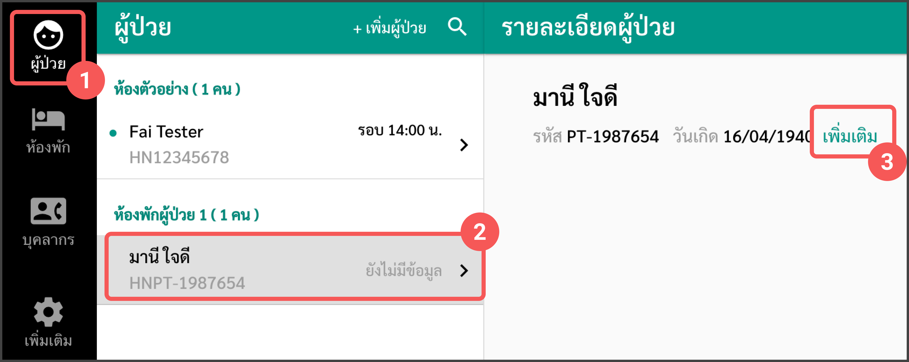
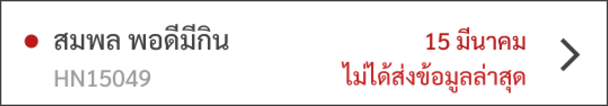
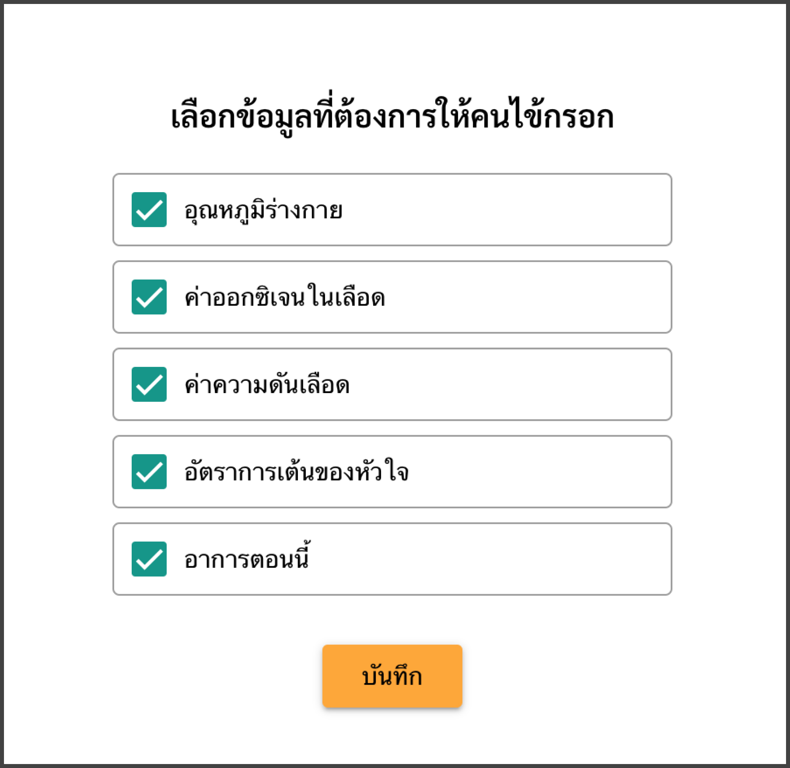

คู่มือการใช้งานสำหรับโรงพยาบาล
อัพเดตล่าสุดเมื่อ 08/04/2563
วิธีใช้งาน
การจัดการผู้ป่วย
เพิ่มรายชื่อผู้ป่วย
- เข้าเมนู "ผู้ป่วย"
- เลือก “+เพิ่มผู้ป่วย”

ดูข้อมูลผู้ป่วย
- เข้าเมนู “ผู้ป่วย”
- เลือกชื่อผู้ป่วยที่ต้องการดูข้อมูล
- เลือก "เพิ่มเติม" 
แก้ไข/ลบข้อมูลผู้ป่วย
- เข้าเมนู "ผู้ป่วย"
- เลือกที่ชื่อของผู้ป่วยที่ต้องการแก้ไขข้อมูล หรือ ลบผู้ป่วย
- กดเครื่องหมาย


พิมพ์ QR Code/พิมพ์รายละเอียดผู้ป่วย
- เข้าเมนู "ผู้ป่วย"
- เลือกที่ชื่อของผู้ป่วยที่ต้องพิมพ์ QR Code หรือรายละเอียดผู้ป่วย
- เลือกที่สัญลักษณ์ปริ๊นเตอร์
การแจ้งเตือน
- จุดเขียว: มีข้อมูลที่ยังไม่ได้อ่านอยู่ เมื่อมีใครเปิดหน้า รายละเอียดผู้ป่วย ก็จะถือว่าอ่านแล้ว
- จุดแดง: เลยเวลาที่กำหนดแต่ยังไม่มีข้อมูลจากผู้ป่วยเข้ามาในระบบ 
- หากเป็นรูปแบบดังรูป แสดงว่ายังไม่ได้เปิดการแจ้งเตือน
- สามารถเปิดการแจ้งเตือนได้โดยการกดเข้าไปที่ชื่อของผู้ป่วย จากนั้นกดที่สัญลักษณ์รูปกระดิ่ง


การจัดการห้องพักผู้ป่วย
เพิ่มห้องพัก
- เข้าเมนู "ห้องพัก"
- เลือก “+ เพิ่มห้องพัก”
แก้ไข/ลบ ห้องพัก
- เข้าเมนู "ห้องพัก"
- เลือกรายชื่อห้องพักที่ต้องการแก้ไข หรือ ลบ
- กดเครื่องหมาย

สร้างแอคเคาท์บุคลากร
สามารถทำได้เฉพาะคนดูแลระบบเท่านั้น
- เข้าเมนู "บุคลากร"
- เลือก "+เพิ่มบุคลากร"

เลือกข้อมูลที่ต้องการให้คนไข้กรอก
สามารถทำได้เฉพาะคนดูแลระบบเท่านั้น
- เข้าเมนู “ตั้งค่า”
- เลือก “เลือกข้อมูลที่ต้องการให้คนไข้กรอก”
- เลือกข้อมูลที่ต้องการให้คนไข้กรอก (สามารถเลือกได้มากกว่า 1 ข้อ) 